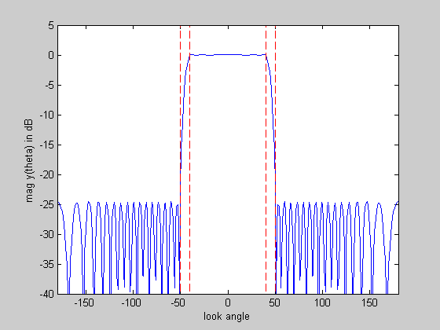
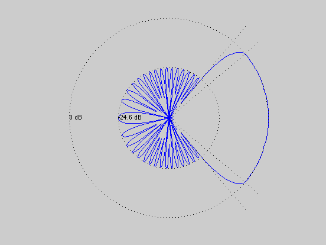

Minimize sidelobe level of a uniform linear array via spectral factorization
n = 20;
lambda = 1;
d = 0.45*lambda;
theta_pass = 40;
theta_stop = 50;
ripple = 0.1;
m = 30*n;
omega_zero = -2*pi*d/lambda;
omega_pass = -2*pi*d/lambda*cos(theta_pass*pi/180);
omega_stop = -2*pi*d/lambda*cos(theta_stop*pi/180);
omega_pi = +2*pi*d/lambda;
omega = linspace(-pi,pi,m)';
A = exp( -j*kron( omega, [-(n-1):n-1] ) );
indp = find( omega >= omega_zero & omega <= omega_pass );
Ap = A(indp,:);
inds = find( omega >= omega_stop & omega <= omega_pi );
As = A(inds,:);
cvx_begin
variable r(2*n-1,1) complex
minimize( max( abs( As*r ) ) )
subject to
real( Ap*r ) >= (10^(-ripple/20))^2;
real( Ap*r ) <= (10^(+ripple/20))^2;
real( A*r ) >= 0;
r(n) == conj(r(n));
r(n-1:-1:1) == conj(r(n+1:end));
cvx_end
disp(['Problem is ' cvx_status])
if ~strfind(cvx_status,'Solved')
return
end
w = spectral_fact(r);
min_sidelobe_level = 10*log10( cvx_optval );
fprintf(1,'The minimum sidelobe level is %3.2f dB.\n\n',...
min_sidelobe_level);
theta = [-180:180]';
G = kron( cos(pi*theta/180), [0:n-1] );
G = exp(2*pi*i*d/lambda*G);
y = G*w;
figure(1), clf
ymin = -40; ymax = 5;
plot([-180:180], 20*log10(abs(y)), ...
[theta_stop theta_stop],[ymin ymax],'r--',...
[-theta_pass -theta_pass],[ymin ymax],'r--',...
[-theta_stop -theta_stop],[ymin ymax],'r--',...
[theta_pass theta_pass],[ymin ymax],'r--');
xlabel('look angle'), ylabel('mag y(theta) in dB');
axis([-180 180 ymin ymax]);
figure(2), clf
zerodB = 50;
dBY = 20*log10(abs(y)) + zerodB;
plot(dBY.*cos(pi*theta/180), dBY.*sin(pi*theta/180), '-');
axis([-zerodB zerodB -zerodB zerodB]), axis('off'), axis('square')
hold on
plot(zerodB*cos(pi*theta/180),zerodB*sin(pi*theta/180),'k:')
plot( (min_sidelobe_level + zerodB)*cos(pi*theta/180), ...
(min_sidelobe_level + zerodB)*sin(pi*theta/180),'k:')
text(-zerodB,0,'0 dB')
text(-(min_sidelobe_level + zerodB),0,sprintf('%0.1f dB',min_sidelobe_level));
plot([0 60*cos(theta_pass*pi/180)], [0 60*sin(theta_pass*pi/180)], 'k:')
plot([0 60*cos(-theta_pass*pi/180)],[0 60*sin(-theta_pass*pi/180)],'k:')
plot([0 60*cos(theta_stop*pi/180)], [0 60*sin(theta_stop*pi/180)], 'k:')
plot([0 60*cos(-theta_stop*pi/180)],[0 60*sin(-theta_stop*pi/180)],'k:')
hold off
Calling SDPT3: 2057 variables, 40 equality constraints
For improved efficiency, SDPT3 is solving the dual problem.
------------------------------------------------------------
num. of constraints = 40
dim. of socp var = 1329, num. of socp blk = 443
dim. of linear var = 728
*******************************************************************
SDPT3: Infeasible path-following algorithms
*******************************************************************
version predcorr gam expon scale_data
NT 1 0.000 1 0
it pstep dstep pinfeas dinfeas gap mean(obj) cputime
-------------------------------------------------------------------
0|0.000|0.000|1.6e+04|1.1e+02|1.6e+06| 7.952977e+01| 0:0:00| chol 1 1
1|0.752|0.715|4.0e+03|3.0e+01|5.1e+05| 1.151512e+03| 0:0:00| chol 1 1
2|0.707|0.811|1.2e+03|5.8e+00|1.5e+05| 1.407034e+03| 0:0:00| chol 1 1
3|0.895|0.839|1.2e+02|9.5e-01|2.0e+04| 8.345163e+02| 0:0:00| chol 1 1
4|0.756|0.741|3.0e+01|2.5e-01|6.0e+03| 2.422236e+02| 0:0:00| chol 1 1
5|0.875|1.000|3.8e+00|2.4e-03|9.3e+02| 2.188878e+01| 0:0:01| chol 1 1
6|0.908|0.751|3.5e-01|1.2e-03|1.5e+02|-2.995521e+01| 0:0:01| chol 1 1
7|0.722|0.562|9.6e-02|5.5e-04|7.2e+01|-2.008094e+01| 0:0:01| chol 2 1
8|1.000|1.000|4.0e-06|1.9e-02|2.6e+01|-7.286369e+00| 0:0:01| chol 1 1
9|0.944|0.889|5.3e-07|2.1e-03|2.8e+00|-7.590024e-01| 0:0:01| chol 1 1
10|0.657|0.588|1.8e-07|8.8e-04|1.5e+00|-4.959159e-01| 0:0:01| chol 1 1
11|1.000|0.966|2.2e-12|3.0e-05|5.5e-01|-1.615009e-01| 0:0:01| chol 1 1
12|0.980|0.853|2.5e-13|4.4e-06|1.0e-01|-3.777283e-02| 0:0:01| chol 1 1
13|0.502|0.758|1.3e-13|1.1e-06|5.3e-02|-1.651808e-02| 0:0:01| chol 1 1
14|0.634|0.859|4.8e-14|1.5e-07|2.1e-02|-5.744787e-03| 0:0:02| chol 1 1
15|0.453|0.464|4.2e-14|8.1e-08|1.5e-02|-4.499504e-03| 0:0:02| chol 1 1
16|0.513|0.730|7.2e-14|2.2e-08|8.7e-03|-2.756362e-03| 0:0:02| chol 1 1
17|0.740|0.763|1.2e-13|5.2e-09|4.0e-03|-2.531183e-03| 0:0:02| chol 1 1
18|0.201|0.913|1.5e-13|4.5e-10|3.1e-03|-2.520267e-03| 0:0:02| chol 1 1
19|0.682|1.000|1.6e-13|1.0e-12|1.3e-03|-3.033583e-03| 0:0:02| chol 1 1
20|0.928|0.863|1.8e-12|1.1e-12|2.5e-04|-3.344816e-03| 0:0:02| chol 1 1
21|0.930|0.793|2.0e-12|1.2e-12|4.2e-05|-3.414977e-03| 0:0:02| chol 1 1
22|0.923|0.823|5.0e-13|1.2e-12|6.7e-06|-3.426096e-03| 0:0:02| chol 1 1
23|0.931|0.817|6.3e-13|1.2e-12|9.3e-07|-3.427911e-03| 0:0:02| chol 1 1
24|0.959|0.969|4.0e-13|1.0e-12|7.6e-08|-3.428117e-03| 0:0:03| chol 1 1
25|0.989|0.988|4.2e-13|1.0e-12|1.5e-09|-3.428146e-03| 0:0:03|
stop: max(relative gap, infeasibilities) < 1.49e-08
-------------------------------------------------------------------
number of iterations = 25
primal objective value = -3.42814544e-03
dual objective value = -3.42814691e-03
gap := trace(XZ) = 1.47e-09
relative gap = 1.46e-09
actual relative gap = 1.46e-09
rel. primal infeas = 4.16e-13
rel. dual infeas = 1.01e-12
norm(X), norm(y), norm(Z) = 8.6e-01, 2.9e-01, 9.2e+00
norm(A), norm(b), norm(C) = 3.0e+02, 2.0e+00, 1.2e+01
Total CPU time (secs) = 2.7
CPU time per iteration = 0.1
termination code = 0
DIMACS: 4.2e-13 0.0e+00 6.2e-12 0.0e+00 1.5e-09 1.5e-09
-------------------------------------------------------------------
------------------------------------------------------------
Status: Solved
Optimal value (cvx_optval): +0.00342815
Problem is Solved
The minimum sidelobe level is -24.65 dB.
 